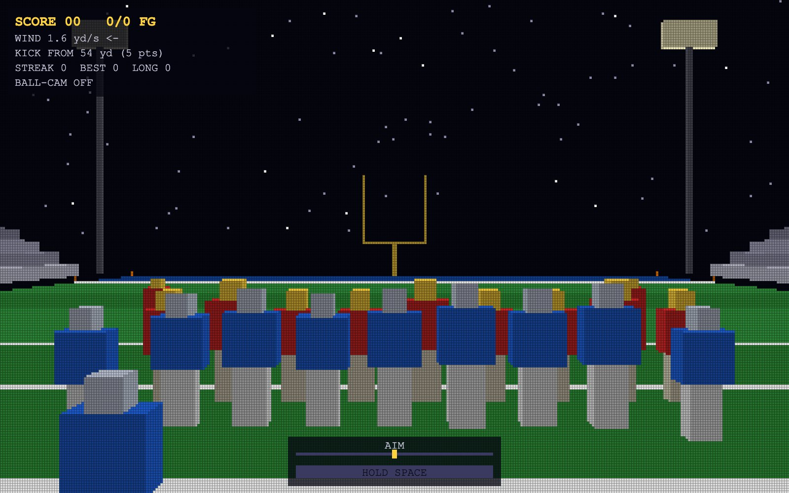
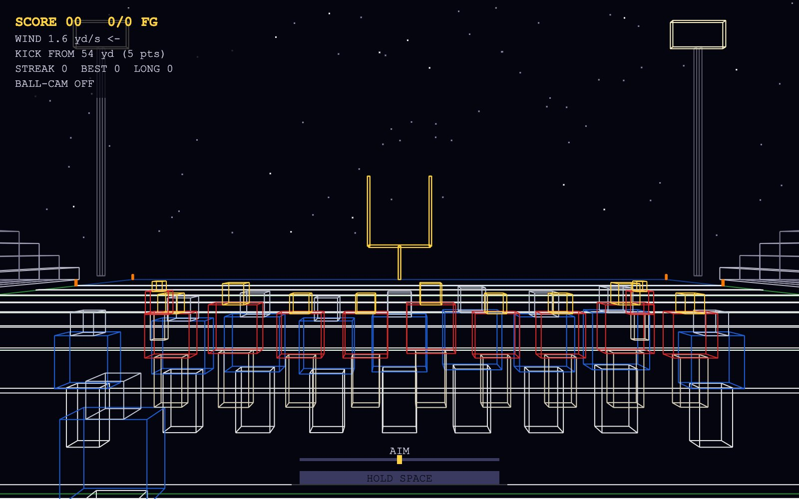
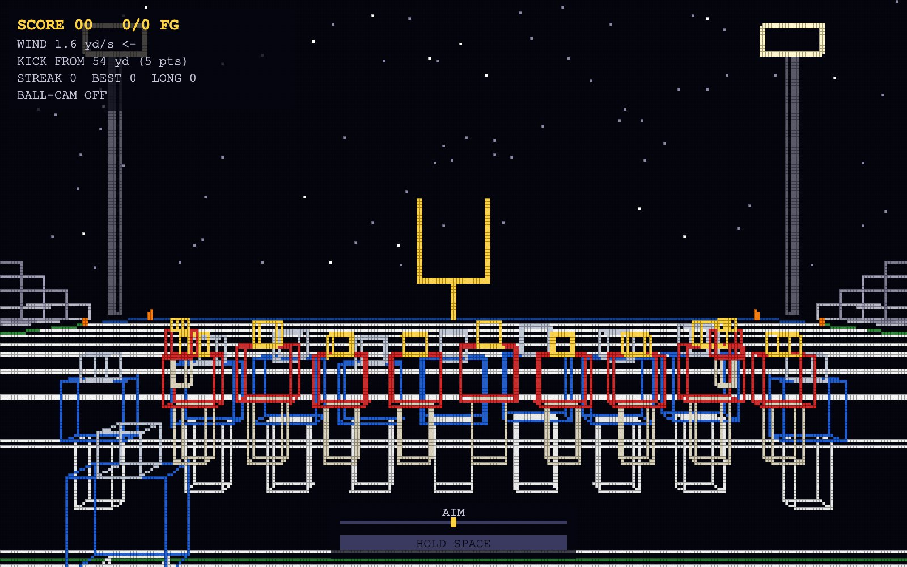
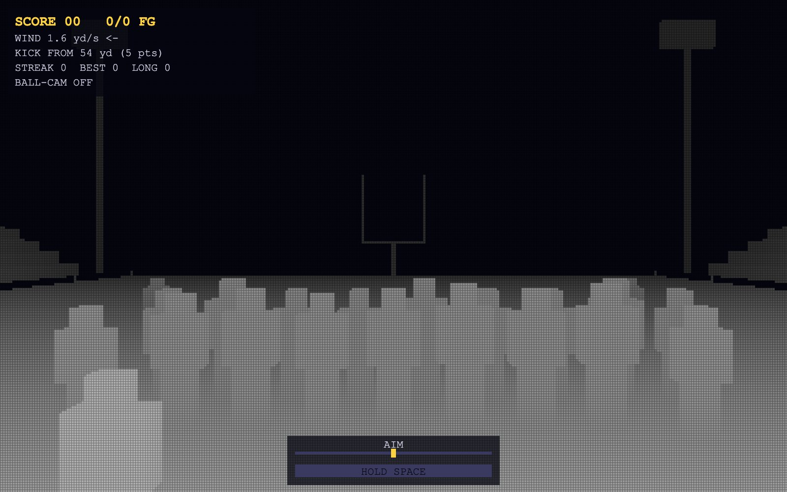
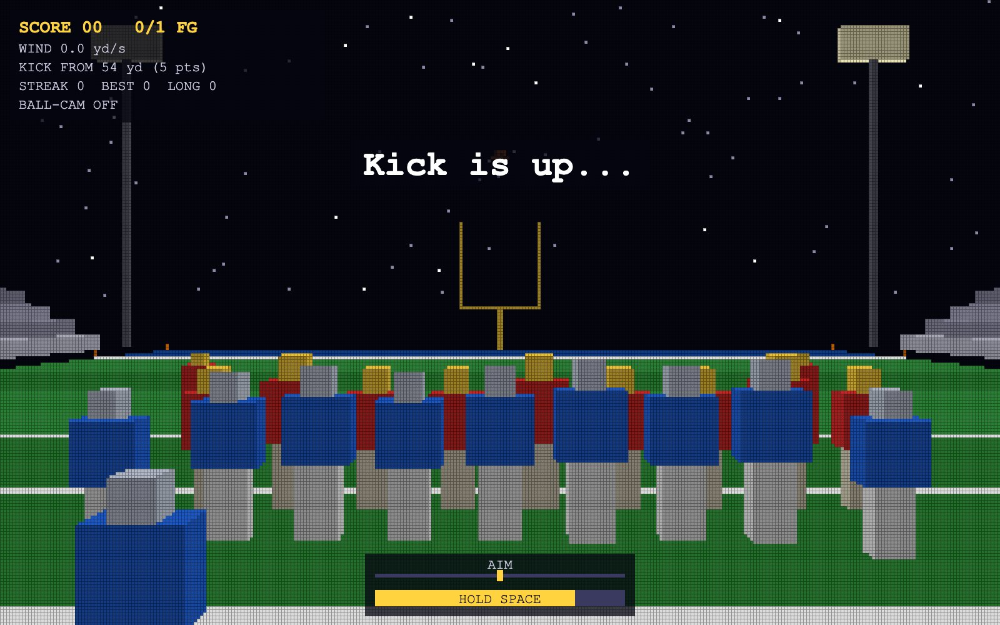
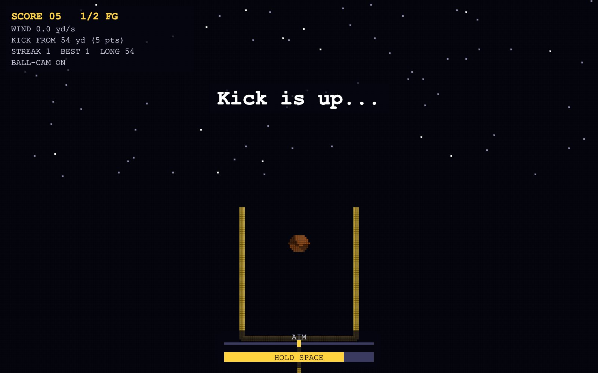
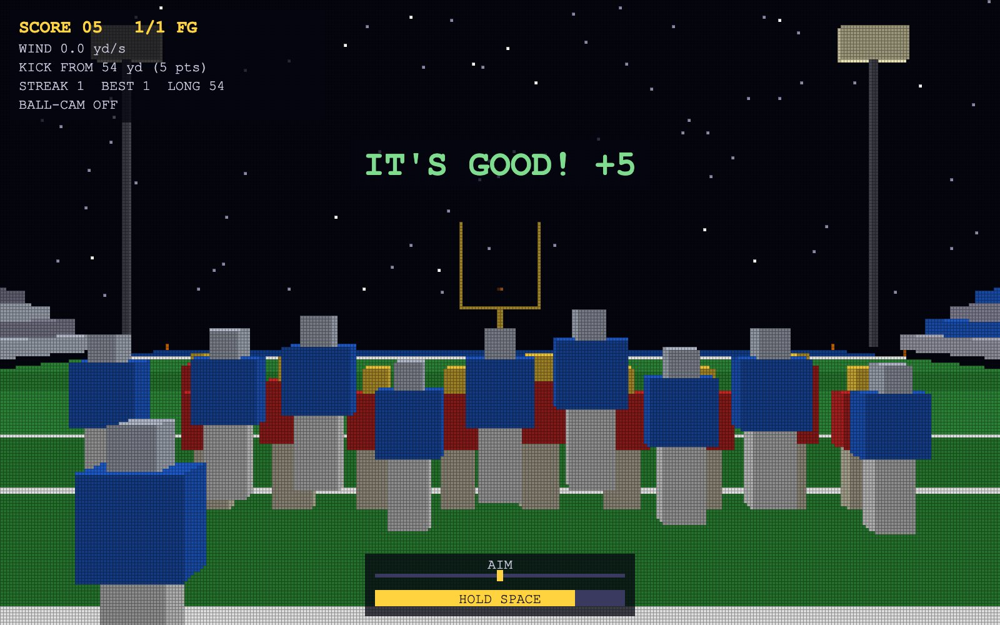
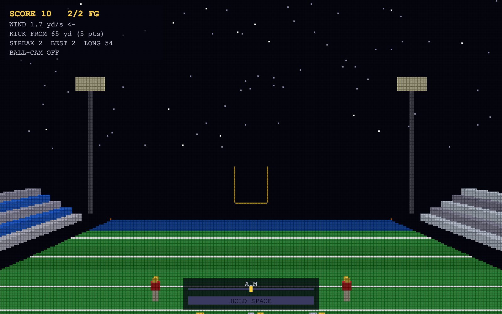

CS5160 · Project 1 · Sept 2026
Pinhole camera, rasterized display — a field goal game on a mock 320×200 screen
You're the kicker. Line up the kick, read the wind, time the power meter, and try to split the uprights under the stadium lights. The whole thing is built with plain JavaScript and the HTML canvas, with no WebGL and no libraries. It has three renderers you can switch between with one key: a high-res wireframe, a 320×200 raster display with my own line-drawing routine, and a filled-triangle renderer with a depth buffer.

01 · Design
What I wanted the game to look like and how I wanted it to behave, before writing code.
A Friday-night football stadium: a dark sky with stars, a striped green field with white yard lines and colored end zones, yellow goal posts, bleachers full of fans on both sidelines, light towers in the corners, and two teams lined up for a field goal. It should read clearly as wireframe lines at 1600×1000 and still look good as chunky 5×5 pixels at 320×200.
The camera is the kicker. It only translates, with no rotation, so you aim by stepping left or right and choose the distance by moving up and back. Space kicks. The ball follows a real projectile arc, wind pushes it sideways, and the game calls the result: good, wide left/right, under the crossbar or short. A made kick makes the team jump and the crowd flash. R resets everything.
02 · Features & Controls
Open the live app, click the canvas, and use the keyboard.
| Key | What it does |
|---|---|
| ← → | Move the camera left / right (x) |
| ↑ ↓ | Move the camera forward / back (z). This changes the kick distance. |
| W S | Raise / lower the camera (y) for a higher view |
| A D | Aim the kick left / right to fight the wind |
| Space | Hold to charge the power meter, release to kick. Above 90% power the kick can shank. |
| F | Ball-cam: the camera follows the ball in flight (translation only) |
| C | Cycle team color schemes |
| R | Reset the camera, objects and score to the initial scene |
| 1 2 3 | Switch renderer: wireframe 1600×1000 / raster lines 320×200 / filled triangles 320×200 |
| G | Toggle the pixel-grid outline (modes 2–3) |
| Z | Show the depth buffer as grayscale (mode 3) |
Scoring. Made kicks are worth 3 points, or 5 from 50+ yards. The HUD tracks score, makes/attempts, streak, best streak, longest make, wind and kick distance. Kicks that clip an upright get a DOINK!.

lineTo at 1600×1000.





03 · Implementation
How each course concept shows up in the code, in the order the pipeline runs.
Each object type is a model: a list of vertex coordinates centered at the origin, a list of edges (index pairs) for
wireframe, and a list of triangles (index triples) for filled rendering. Each edge or triangle also carries a color key such as
"jersey" or "helmet". Most models are built from a helper that adds an axis-aligned box: 8 vertices,
12 edges and 12 triangles (two per face).
// Object types: field segment, yard line, goal post, player, football, // cube (the Level 0 cube, used as sideline coolers), pylon, bleachers, light tower, ball shadow const PLAYER = newModel("player"); addBox(PLAYER, 0, 0.45 - PL_CY, 0, 0.5, 0.9, 0.3, "pants"); // legs addBox(PLAYER, 0, 1.3 - PL_CY, 0, 0.8, 0.8, 0.4, "jersey"); // torso + shoulder pads addBox(PLAYER, 0, 1.87 - PL_CY, 0, 0.35, 0.35, 0.35, "helmet"); // helmet
An instance is a model plus a position vector, a scale factor and a color map. To place a vertex in the world, the code scales it and then translates it. To move into camera space, it subtracts the camera position. The camera never rotates, so this subtraction is the whole view transform.
function toCamera(v, inst) {
return {
x: v[0] * inst.scale + inst.pos.x - camera.x,
y: v[1] * inst.scale + inst.pos.y - camera.y,
z: v[2] * inst.scale + inst.pos.z - camera.z,
};
}
The camera looks down +z. By similar triangles, a point at camera-space (x, y, z) lands on the image plane at x/z and y/z.
Multiplying by a focal length F, taken from a 70° horizontal field of view, turns that into pixels. Shifting by half
the screen puts (0,0) in the center, and y is flipped because screen rows grow downward. The same function drives both displays;
only F and the screen size change (1600×1000 vs 320×200).
Far objects shrink because z is larger, which is perspective. It's why the far goal posts look small and the field lines converge toward the horizon.
Dividing by z breaks down when z ≤ 0: points behind the pinhole flip upside down and blow up. So before projecting, every edge is clipped against a near plane at z = 0.3. If both ends are behind it, the edge is skipped. If one end is, that end is moved to where the edge crosses the plane. Triangles use the same idea (Sutherland–Hodgman), which can turn a triangle into a four-sided polygon that is re-split into two triangles. The camera also has simple collision checks, so it can't walk inside a player or a goal post.
The raster display is a 320 × 200 2D array of colors that starts filled with the background color. Instead of
ctx.lineTo, each projected edge is drawn with the incremental line algorithm from class. For slopes
between −1 and 1, it steps one pixel at a time in u and adds the slope m to v each step. For steeper lines it swaps roles, stepping
in v and adding 1/m to u, so steep lines don't come out as gaps. It samples at pixel centers. Lines are first clipped to the screen
rectangle (Liang–Barsky) so the loop never walks thousands of off-screen pixels.
if (Math.abs(dx) >= Math.abs(dy)) { // shallow: step in u
const m = dy / dx;
let v = y0 + m * (uStart + 0.5 - x0);
for (let u = uStart; u <= uEnd; u++) {
setPixelColor(u, Math.floor(v), color);
v += m; // incremental step
}
} else { /* steep: same idea, step in v and add 1/m to u */ }
After every edge is written into the array, the draw pass paints each stored pixel as a 5×5 rectangle on the 1600×1000 canvas. The G key overlays the pixel grid so the individual pixels are visible.
For each triangle, the renderer projects its three vertices, takes their bounding box (min/max u and v, clamped to the screen), and tests every pixel center inside it. The test uses barycentric coordinates computed from areas: each weight is the area of the sub-triangle opposite a vertex divided by the whole triangle's area. The pixel is inside only if all three weights are ≥ 0. The same signed-area expression is the "half-plane" edge test, and dividing by the signed total area makes it work no matter which way the triangle winds.
const area = edgeFn(p0, p1, p2); const w0 = edgeFn(p1, p2, P) / area; // weight of p0 const w1 = edgeFn(p2, p0, P) / area; // weight of p1 const w2 = 1 - w0 - w1; // weights sum to 1 if (w0 < 0 || w1 < 0 || w2 < 0) continue; // outside the triangle
With hundreds of overlapping triangles, the painter's algorithm would need sorting and still fails when triangles overlap in depth. Instead there is a z-buffer: one depth value per pixel, reset every frame. The barycentric weights that decided coverage also interpolate depth across the triangle. I interpolate 1/z rather than z, because after perspective division 1/z varies linearly across the screen, so the result is correct. A pixel is written only if its 1/z is larger (closer) than what's stored, so triangles can be drawn in any order. The Z key shows this buffer directly.
Every surface has a base color from its instance, such as team jerseys, turf stripes or yellow posts. To keep boxes from looking flat, each triangle gets a normal from the cross product of two of its edges. Its brightness is scaled by the dot product between that normal and a fixed light direction. This is flat (per-triangle) Lambert shading.
04 · Future work
05 · Demo
A narrated tour of the three renderers, the controls, and the graphics concepts.
06 · AI use
I used Claude (Anthropic) as a coding assistant on this project. I chose the concept and gave it the assignment spec and course slides. It drafted the initial implementation of the renderers and game logic, captured screenshots, and helped draft this write-up.
07 · Links